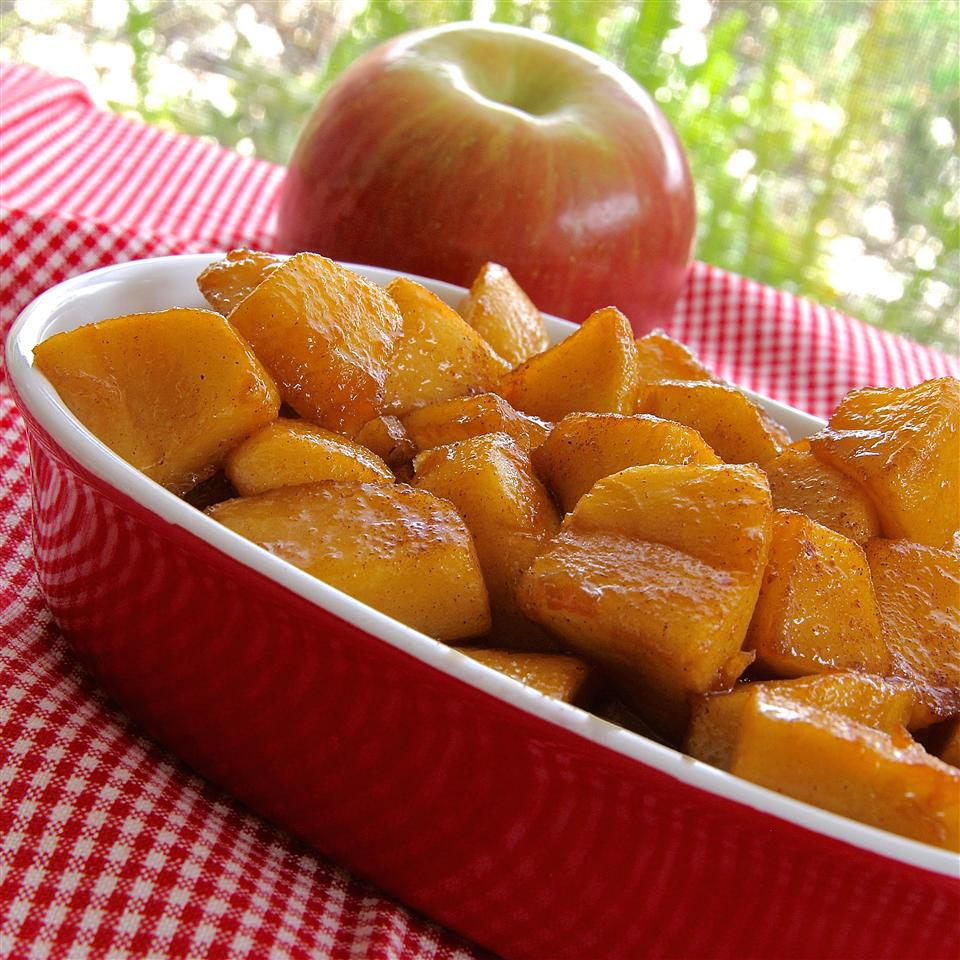

Skillet Apples

Description
These delicious skillet apples are a treat anytime of the year, but really special during the autumn. Tart apples mixed with the cinammon and sugar make for a soul warming treat sure to delight everyone at the table. The apples work well with all meat dishes, but are especially good with pork.
Ingredients
You will need:
- 3-4 medium sized tart apples
- Sugar
- Cinammon
- Butter
- optional: Corn Starch
Directions:
- Cut up apples into slices or large chunks.
- Melt butter in pan then add apples.
- Add sugar and cinammon and stir gently over medium heat.
- To thicken the sauce, you may use corn starch.
- Serve hot once apples are fork tender.
Go back to homepage